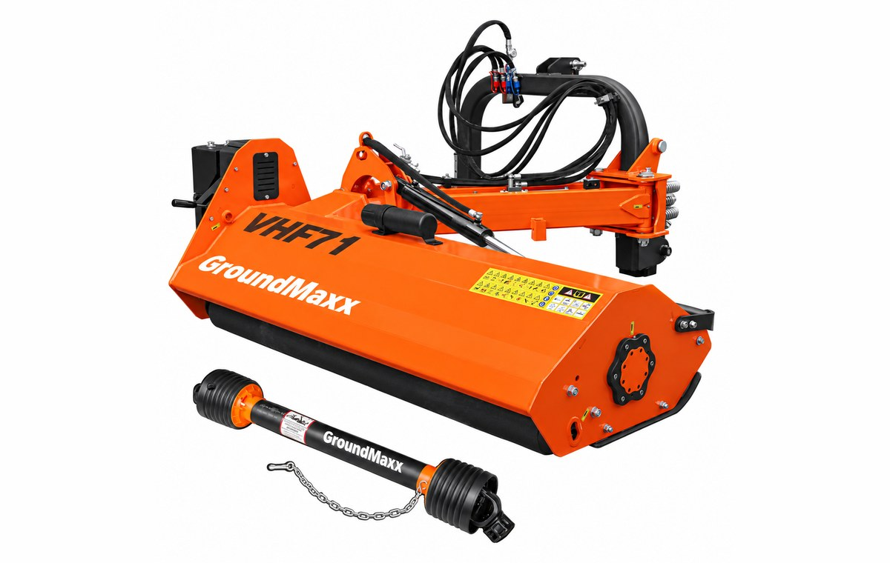

Hydraulic side-offset

VHF71 71″ Heavy-Duty Hydraulic Offset Flail Ditch Bank Mower
71-inch hydraulic offset flail mower for verges, ditch banks and road shoulders -- swings out on a hydraulic arm while the tractor stays on flat ground.
- 71-inch cutting width -- flail (hammer-blade) head for verges, banks and rough growth
- Hydraulic side-offset arm swings the head out to mow ditch banks and shoulders while the tractor stays on flat, stable ground
- Head also tilts on the arm, so you angle the cut to the slope instead of fighting it
$7,499$8,999